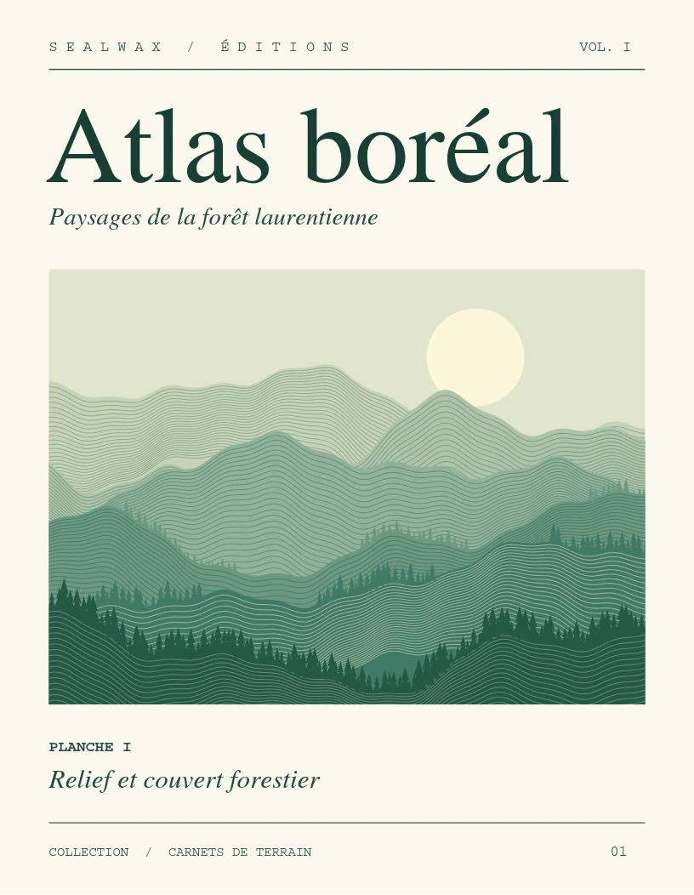

Lire et transformer
Extrayez le texte avec ses coordonnées, rendez une page en PNG ou remplissez les champs d’un formulaire avant de l’aplatir.
Lisez, annotez et transformez vos PDF en Rust, Python ou JavaScript. Sealwax traite vos fichiers là où tourne votre code, du serveur au navigateur.

Téléchargez l’atlas et installez Sealwax. En quelques lignes, exportez sa première page en image à l’échelle ×2.
Télécharger atlas.pdfpip install sealwaxfrom pathlib import Path
import sealwax
pdf = Path("atlas.pdf").read_bytes()
doc = sealwax.Document.from_bytes(pdf)
png = doc.render_png(0, scale=2)
Path("atlas.png").write_bytes(png)cargo add sealwaxuse sealwax::{raster, Document, OpenOptions};
use std::{error::Error, fs};
fn main() -> Result<(), Box<dyn Error>> {
let pdf = fs::read("atlas.pdf")?;
let doc = Document::open(pdf, &OpenOptions::default())?;
let png = raster::render_png(&doc, 0, 2.0)?;
fs::write("atlas.png", png)?;
Ok(())
}npm install sealwaximport { readFile, writeFile } from "node:fs/promises";
import { Document } from "sealwax";
const pdf = await readFile("atlas.pdf");
const doc = Document.fromBytes(pdf);
const png = doc.renderPng(0, 2);
await writeFile("atlas.png", png);
doc.free();cargo install sealwax-clisealwax render atlas.pdf \
--page 1 \
--scale 2 \
--out atlas.pngExtrayez le texte avec ses coordonnées, rendez une page en PNG ou remplissez les champs d’un formulaire avant de l’aplatir.
Fixez un délai et plafonnez les pixels et les octets décompressés. En Python, sealwax.isolated permet aussi de traiter les PDF reçus dans un processus séparé.
En Rust ou en Python, convertissez en PDF/A-3 et signez au format PAdES jusqu’au niveau B-LTA. Votre clé privée reste dans votre service de signature.
Utilisez, modifiez et redistribuez Sealwax, y compris dans un produit commercial. La bibliothèque est gratuite, sous licence MIT ou Apache-2.0, à votre choix.